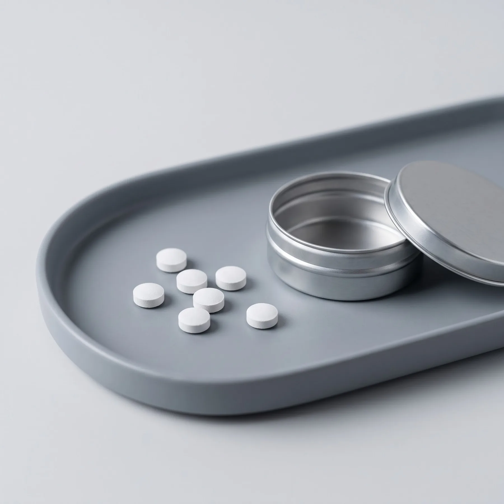

FDA memperluas indikasi tablet SLIT tungau debu rumah Odactra untuk anak usia 5 sampai 11 tahun.
Sumber: Coherent MIProduk dalam pengembangan. Informasi untuk tenaga kesehatan dan mitra.
images/hero-patch.webp
16:9, produk di kanan
16:9, produk di kanan
Sepuluh alergen, satu patch
Patch diagnostik untuk membantu klinisi memetakan pemicu alergi, dan tablet sublingual untuk desensitisasi bertahap.
Pilih produk
Patch diagnostik10 alergen, dalam pengembangan
Lihat detail
Tablet sublingualDesensitisasi, dalam pengembangan
Lihat detail
images/patch-samping.webp
4:5, patch berdiri miring
4:5, patch berdiri miring
Presisi alergen
Patch diagnostik yang memetakan 10 pemicu alergi sekaligus, dengan alergen dimuat dalam matriks HPMC dan PEG di tiap sumur.
10alergen dalam satu patch
2 × 5sumur bulat per patch
2produk: patch dan tablet
Patch diagnostik 10 alergen
Alat bantu klinisi, dipasang di kulit dan dibaca setelah waktu yang ditetapkan protokol.
Pelajari cara kerja ↗images/patch-atas.webp
1:1, tampak atas
1:1, tampak atas
10 sumur · 2 × 5 · HPMC + PEG
Tablet sublingual
Larut di bawah lidah untuk desensitisasi bertahap, di bawah pengawasan dokter.
Lihat batas penggunaan ↗images/tablet.webp
1:1, tablet ilustratif
1:1, tablet ilustratif

SLIT · di bawah lidah · dalam pengembangan
Panel alergen
Sepuluh alergen yang dipetakan
Dua alergen hirup dan delapan alergen makanan. Tungau debu rumah termasuk pemicu utama alergi hirup di dunia, dan iklim tropis Indonesia mendukung perkembangbiakannya.
Riset di Universitas Airlangga telah mengembangkan metode kultivasi dan ekstraksi terstandar untuk ekstrak tungau debu rumah Indonesia. Sumber: UNAIR
- Alergen hirupTungau debu rumah
- Alergen hirupPolen
- MakananUdang
- MakananSusu sapi
- MakananDaging
- MakananAyam
- MakananTelur
- MakananGandum
- MakananKacang tanah
- MakananKelapa
Ilustrasi daftar alergen. Susunan sumur pada patch final dapat berbeda.
images/patch-miring.webp
16:9
16:9
- 01 · TempelPasang di kulit
Klinisi memasang patch pada kulit yang sehat sesuai protokol pemakaian.
- 02 · TungguIkuti protokol
Patch dibiarkan selama waktu yang ditetapkan protokol.
- 03 · BacaInterpretasi klinisi
Klinisi menilai reaksi di tiap titik bersama riwayat pasien dan uji lain.
Batas penggunaan
Atopy patch test diposisikan sebagai alat bantu oleh EAACI. Untuk alergi makanan, uji provokasi oral tersamar ganda tetap menjadi standar emas. Patch ini tidak menggantikan uji tusuk kulit, pemeriksaan IgE, atau uji provokasi oral, dan hanya dipakai di bawah arahan tenaga kesehatan.
Mengapa ini berbeda
Keputusan klinis yang bisa dipertanggungjawabkan
Alat bantu pelengkap
Satu patch memuat 10 alergen dalam matriks HPMC dan PEG, dibaca oleh klinisi bersama riwayat pasien dan uji lain.
10 alergen dalam satu tempelan
Matriks HPMC dan PEG
Tablet sublingual
Tablet SLIT untuk tungau debu, rumput, dan pohon sudah disetujui regulator di sejumlah wilayah. Untuk alergen makanan, pengembangannya masih tahap penelitian.
Dosis kecil bertahap
Di bawah pengawasan dokter
Yang tidak digantikan
Patch tidak menggantikan uji tusuk kulit, pemeriksaan IgE, atau uji provokasi oral. Tablet tidak dijual online.
Reaksi alergi makanan bisa berat
Selalu lewat tenaga kesehatan
images/detail-makro.webp
4:3.4, foto makro sumur
4:3.4, foto makro sumur
Pasar diagnostik alergi global
2025USD 7,09 miliar
2033, proyeksiUSD 16,37 miliar
Grand View Research, pertumbuhan majemuk 11,29% per tahun.
Industri alergi
Pasar tumbuh, terapi non-injeksi paling cepat
Angka berbeda antar lembaga karena definisi pasarnya berbeda. Setiap kartu mencantumkan sumbernya.
Stallergenes Greer bermitra dengan Nuance Pharma untuk memasarkan tablet SLIT tungau debu Actair di China.
Sumber: Research and MarketsDBV Technologies mengajukan BLA Viaskin Peanut, patch kulit untuk alergi kacang, ke FDA untuk anak usia 4 sampai 7 tahun.
Sumber: Siaran pers DBVSLIT diproyeksikan tumbuh 15,25% per tahun, tercepat di antara jenis imunoterapi alergi. Injeksi subkutan masih terbesar, 44,55% pada 2025.
Sumber: Mordor IntelligencePrevalensi asma 4,5% (Riskesdas 2013). Pasar terapi alergi bernilai USD 139 juta pada 2022 dan diproyeksikan USD 229 juta pada 2030.
Sumber: Meditek UKRIDA, Insights10 (laporan komersial)images/cta-gelap.webp
21:9, abstrak gelap
21:9, abstrak gelap
Mulai dari diagnosis yang tepat
Monograf, data sheet, dan diskusi kerja sama diberikan atas permintaan untuk klinisi, laboratorium, dan mitra.
Hubungi tim